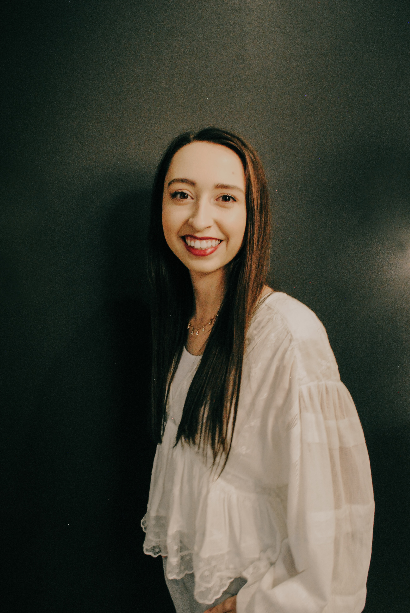

About Me
Hey visitors! Welcome to my online home. My name is Nicole Duncan and I am an aspiring web developer. I am currently attending the University of Arizona Coding Boot Camp for Continuing and Professional Education.
I spent two years at Mesa Community College trying to figure out what I wanted to do with my life. After switching majors four times, I decided to do more research into the web design and coding world. I ended up running into this coding program by happen stance and decidied to quit school and give this a go. It's been the best decision I have ever made!
I would encourage everyone to follow their dreams and to never settle for less. We all have something that we are good at and are meant to do. So do it!